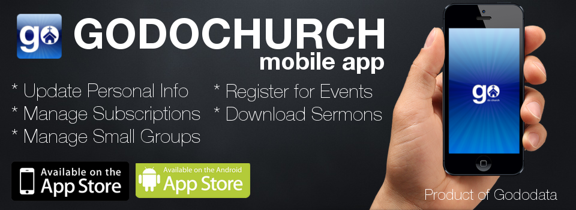

You can very easily get your church up an running with the full Godochurch communication and data services. This can also include
a custom mobile application for your church.
View Features at:
www.godochurch.com
Register Database at:
start.godochurch.com